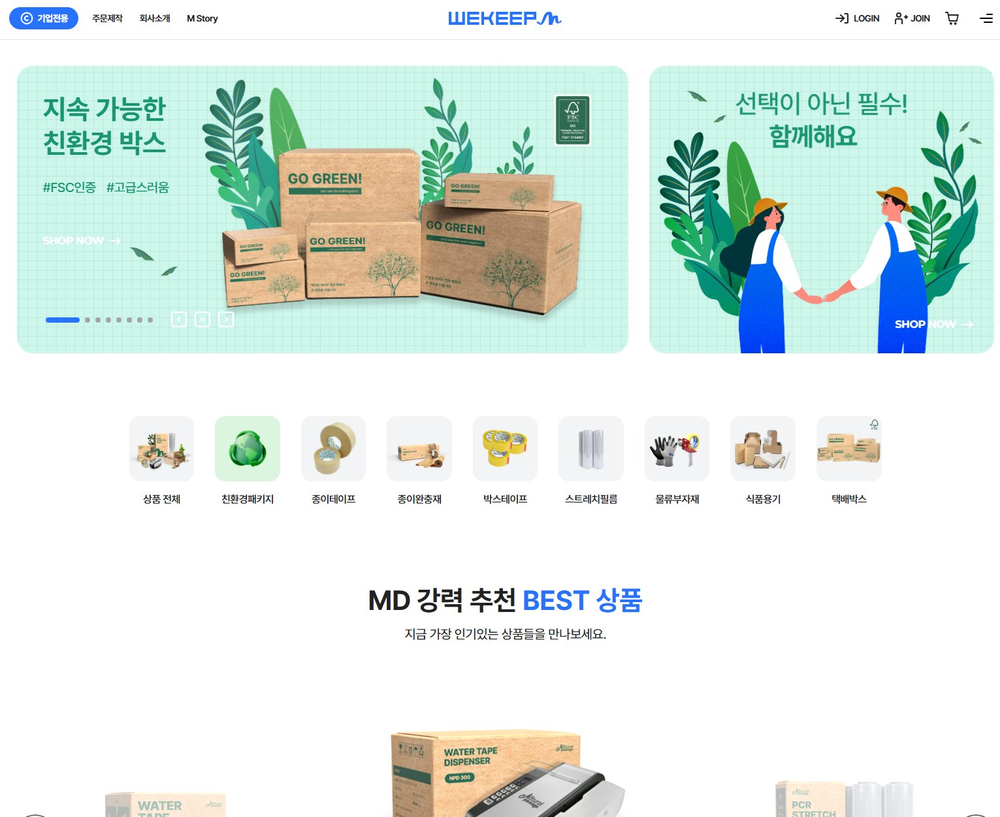

디디에두보 리뉴얼
브랜드: DIDIER DUBOT
핵심 기여 CAFE24 솔루션 기반으로 PC·모바일 리뉴얼 퍼블리싱을 진행했습니다. 브랜드 가이드에 맞춘 UI 구현과 주요 화면의 구조 정리, 스타일 일관성 유지에 중점을 두었습니다.
Web Publisher · 4y 5m cumulative
에이전시와 자체 서비스 환경에서 구축·리뉴얼·운영을 모두 경험한 웹 퍼블리셔입니다. SCSS 기반 구조화, 반응형/크로스브라우징 대응, 운영 이슈 처리에 강점이 있습니다.
결과 화면뿐 아니라 맡은 범위, 해결 과정, 확인 가능한 성과 기준까지 함께 정리했습니다.
2024.01 — 2025.09 · 운영/유지보수
운영 안정 · 이슈 대응 · 유지보수 효율화
대림 계열사 복수 도메인의 운영 퍼블리싱을 전담. 이슈 유형별 분류 체계를 수립하고 공통 스타일 시트 정리로 중복 CSS를 축소하여 이슈 재발률을 낮춤.
정리 기준 운영 기간에 수행한 이슈 대응과 도메인·역할 범위

// 구현 근거 · 공통 컴포넌트 구조
// _components.scss .card { &__header { ... } &__body { ... } &__footer { ... } @include respond-to(md) { flex-direction: column; } }

2023.04 — 2023.06 · 협업 구축
협업 · 반응형 구축 · 일정 대응
Jira/Git 기반 협업 환경에서 이슈를 단위별로 분리·트래킹. 레이아웃을 공통 패턴으로 정리해 변경 영향 범위를 최소화하고 납기 내 납품 완료.
정리 기준 프로젝트 계획 일정과 실제 납품 일정, 담당 화면 범위

2022.12 — 2023.01 · 리뉴얼
구조 설계 · 템플릿화 · 반응형
자사 홈페이지 리뉴얼 과정에서 SCSS 구조화와 공통 템플릿을 도입해 신규 페이지를 확장하기 쉬운 구조로 개선하고, 담당 범위의 퍼블리싱을 단독 진행.
정리 기준 공통 템플릿 적용 전후의 작업 흐름
커머스·브랜드·법률 분야의 구축과 운영 경험을 프로젝트별 담당 범위와 협업 방식 중심으로 정리했습니다.
디디에두보 리뉴얼
브랜드: DIDIER DUBOT
핵심 기여 CAFE24 솔루션 기반으로 PC·모바일 리뉴얼 퍼블리싱을 진행했습니다. 브랜드 가이드에 맞춘 UI 구현과 주요 화면의 구조 정리, 스타일 일관성 유지에 중점을 두었습니다.
디자인스킨 리뉴얼
브랜드: DESIGN SKIN
핵심 기여 CAFE24 기반 리뉴얼 프로젝트에서 PC·모바일 퍼블리싱을 담당했습니다. 다양한 페이지 유형과 상품 기능 관련 JavaScript(jQuery)를 적용하고, 운영을 고려한 구조로 마크업을 구성했습니다.
미쏘 & 로엠 모바일 구축
브랜드: E-Land MIXXO & ROEM
핵심 기여 CAFE24 솔루션 환경에서 모바일 퍼블리싱을 담당했습니다. 브랜드별 화면 특성과 운영 요구사항에 맞춰 UI를 구현하고 일정에 맞춰 구축을 완료했습니다.
스파오 유지보수
브랜드: E-Land SPAO
핵심 기여 운영 중인 쇼핑몰의 유지보수 퍼블리싱을 담당하며 페이지 수정·개선 요청과 이슈에 대응했습니다. 기존 구조를 파악한 뒤 서비스에 영향을 최소화하도록 변경 사항을 반영했습니다.
즈윌링 서브페이지 제작 및 기능 추가
브랜드: 즈윌링(ZWILLING)
핵심 기여 기존 사이트의 신규 서브페이지 퍼블리싱과 기능 추가를 담당했습니다. 화면 흐름과 UI 톤을 유지하면서 신규 요소를 연결하고 운영 중인 서비스에 적용했습니다.
창과방패 법무법인 신규 구축
Client : 창과방패 법무법인
핵심 기여 고도몰 솔루션 기반으로 PC·모바일 신규 구축 퍼블리싱을 담당했습니다. 주요 화면을 구현하고 서비스 오픈과 이후 운영을 고려해 기본 구조와 UI를 구성했습니다.
라인프렌즈 팝업스토어 페이지 제작
Client : LINE FRIENDS
핵심 기여 디자이너와 협업해 팝업스토어 페이지의 반응형 UI와 인터랙션을 구현하고, 2주 일정 안에 제작을 완료했습니다.
"할 줄 안다"가 아닌, 실무에서 어떻게 사용했는지를 기준으로 정리했습니다.
2025년 9월 기준 누적 4년 5개월의 실무를 통해 에이전시와 자체 서비스 양쪽 환경을 경험했습니다. 에이전시에서는 빠른 납기 대응으로 판단력과 효율적인 작업 습관을 키웠고, 자체 서비스에서는 장기 운영 관점에서 코드의 유지보수성을 고민하며 성장했습니다.
디자인 구현에 그치지 않고, 반복 작업을 줄이는 구조와 개발자 협업을 고려한 마크업을 중요하게 생각합니다.
구조가 좋은 코드는 다음 사람도 쉽게 이해하고 수정할 수 있습니다. 그 '다음 사람'이 반년 뒤의 나 자신일 수도 있기 때문에, 항상 주석과 구조에 신경씁니다.
새로운 기회나 협업 제안 언제든지 환영합니다.